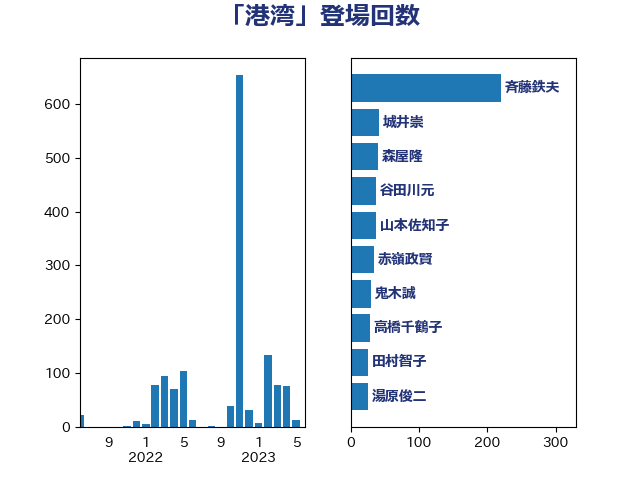

単語「港湾」

| 斉藤鉄夫 | 公明党 | 220 回 |
| 城井崇 | 立憲民主党 | 42 回 |
| 森屋隆 | 立憲民主党 | 40 回 |
| 谷田川元 | 立憲民主党 | 37 回 |
| 山本佐知子 | 自由民主党 | 37 回 |
| 赤嶺政賢 | 日本共産党 | 34 回 |
| 鬼木誠 | 立憲民主党 | 30 回 |
| 高橋千鶴子 | 日本共産党 | 28 回 |
| 田村智子 | 日本共産党 | 26 回 |
| 湯原俊二 | 立憲民主党 | 25 回 |
| 伊波洋一 | 無所属 | 20 回 |
| 野田国義 | 立憲民主党 | 18 回 |
| 浜口誠 | 国民民主党 | 17 回 |
| 古川元久 | 国民民主党 | 17 回 |
| 伊藤渉 | 公明党 | 17 回 |
| 矢倉克夫 | 公明党 | 15 回 |
| 朝日健太郎 | 自由民主党 | 15 回 |
| 大野泰正 | 自由民主党 | 15 回 |
| 石井浩郎 | 自由民主党 | 13 回 |
| 渡辺猛之 | 自由民主党 | 13 回 |
| 木原稔 | 自由民主党 | 13 回 |
| 一谷勇一郎 | 日本維新の会 | 12 回 |
| 石井苗子 | 日本維新の会 | 11 回 |
| 工藤彰三 | 自由民主党 | 11 回 |
| 赤木正幸 | 日本維新の会 | 10 回 |
| 清水真人 | 自由民主党 | 10 回 |
| 浜田靖一 | 自由民主党 | 10 回 |
| 中川康洋 | 公明党 | 10 回 |
| 石原正敬 | 自由民主党 | 9 回 |
| 高橋光男 | 公明党 | 8 回 |
| 音喜多駿 | 日本維新の会 | 8 回 |
| 蓮舫 | 立憲民主党 | 8 回 |
| 山口壯 | 自由民主党 | 8 回 |
| 足立敏之 | 自由民主党 | 7 回 |
| 福島伸享 | 無所属 | 7 回 |
| 瀬戸隆一 | 自由民主党 | 7 回 |
| 岸田文雄 | 自由民主党 | 7 回 |
| 中根一幸 | 自由民主党 | 7 回 |
| 鈴木英敬 | 自由民主党 | 6 回 |
| 西銘恒三郎 | 自由民主党 | 6 回 |
| 大口善徳 | 公明党 | 6 回 |
| 青木愛 | 立憲民主党 | 5 回 |
| 舩後靖彦 | れいわ新選組 | 5 回 |
| 山添拓 | 日本共産党 | 5 回 |
| 山口俊一 | 自由民主党 | 5 回 |
| 宮本岳志 | 日本共産党 | 5 回 |
| 馬淵澄夫 | 立憲民主党 | 4 回 |
| 近藤和也 | 立憲民主党 | 4 回 |
| 美延映夫 | 日本維新の会 | 4 回 |
| 杉田水脈 | 自由民主党 | 4 回 |
| 安江伸夫 | 公明党 | 4 回 |
| 吉田はるみ | 立憲民主党 | 4 回 |
| 加藤鮎子 | 自由民主党 | 4 回 |
| たがや亮 | れいわ新選組 | 4 回 |
| 長友慎治 | 国民民主党 | 3 回 |
| 鈴木俊一 | 自由民主党 | 3 回 |
| 芳賀道也 | 国民民主党 | 3 回 |
| 白石洋一 | 立憲民主党 | 3 回 |
| 根本匠 | 自由民主党 | 3 回 |
| 柴田巧 | 日本維新の会 | 3 回 |
| 林芳正 | 自由民主党 | 3 回 |
| 木村次郎 | 自由民主党 | 3 回 |
| 市村浩一郎 | 日本維新の会 | 3 回 |
| 岡田直樹 | 自由民主党 | 3 回 |
| 山岸一生 | 立憲民主党 | 3 回 |
| 太栄志 | 立憲民主党 | 3 回 |
| 三反園訓 | 無所属 | 3 回 |
| 鈴木義弘 | 国民民主党 | 2 回 |
| 金子恵美 | 立憲民主党 | 2 回 |
| 赤羽一嘉 | 公明党 | 2 回 |
| 西野太亮 | 自由民主党 | 2 回 |
| 西村明宏 | 自由民主党 | 2 回 |
| 篠原孝 | 立憲民主党 | 2 回 |
| 竹詰仁 | 国民民主党 | 2 回 |
| 石垣のりこ | 立憲民主党 | 2 回 |
| 田村貴昭 | 日本共産党 | 2 回 |
| 田中健 | 国民民主党 | 2 回 |
| 梶原大介 | 自由民主党 | 2 回 |
| 杉尾秀哉 | 立憲民主党 | 2 回 |
| 本村伸子 | 日本共産党 | 2 回 |
| 本庄知史 | 立憲民主党 | 2 回 |
| 山下芳生 | 日本共産党 | 2 回 |
| 國場幸之助 | 自由民主党 | 2 回 |
| 吉田とも代 | 日本維新の会 | 2 回 |
| 伊藤俊輔 | 立憲民主党 | 2 回 |
| 井野俊郎 | 自由民主党 | 2 回 |
| 三浦信祐 | 公明党 | 2 回 |
| おおつき紅葉 | 立憲民主党 | 2 回 |
| 高木陽介 | 公明党 | 1 回 |
| 高木毅 | 自由民主党 | 1 回 |
| 高木啓 | 自由民主党 | 1 回 |
| 高木かおり | 日本維新の会 | 1 回 |
| 青山繁晴 | 自由民主党 | 1 回 |
| 阿達雅志 | 自由民主党 | 1 回 |
| 長坂康正 | 自由民主党 | 1 回 |
| 金子俊平 | 自由民主党 | 1 回 |
| 野中厚 | 自由民主党 | 1 回 |
| 里見隆治 | 公明党 | 1 回 |
| 西村康稔 | 自由民主党 | 1 回 |
| 藤木眞也 | 自由民主党 | 1 回 |
| 萩生田光一 | 自由民主党 | 1 回 |
| 緑川貴士 | 立憲民主党 | 1 回 |
| 篠原豪 | 立憲民主党 | 1 回 |
| 石井拓 | 自由民主党 | 1 回 |
| 石井啓一 | 公明党 | 1 回 |
| 盛山正仁 | 自由民主党 | 1 回 |
| 田名部匡代 | 立憲民主党 | 1 回 |
| 猪瀬直樹 | 日本維新の会 | 1 回 |
| 牧野たかお | 自由民主党 | 1 回 |
| 浜地雅一 | 公明党 | 1 回 |
| 泉田裕彦 | 自由民主党 | 1 回 |
| 泉健太 | 立憲民主党 | 1 回 |
| 河野義博 | 公明党 | 1 回 |
| 森山浩行 | 立憲民主党 | 1 回 |
| 梅村聡 | 日本維新の会 | 1 回 |
| 梅村みずほ | 日本維新の会 | 1 回 |
| 東徹 | 日本維新の会 | 1 回 |
| 東国幹 | 自由民主党 | 1 回 |
| 日下正喜 | 公明党 | 1 回 |
| 新垣邦男 | 立憲民主党 | 1 回 |
| 志位和夫 | 日本共産党 | 1 回 |
| 庄子賢一 | 公明党 | 1 回 |
| 広瀬めぐみ | 自由民主党 | 1 回 |
| 川崎ひでと | 自由民主党 | 1 回 |
| 岡本あき子 | 立憲民主党 | 1 回 |
| 山際大志郎 | 自由民主党 | 1 回 |
| 山崎正恭 | 公明党 | 1 回 |
| 尾崎正直 | 自由民主党 | 1 回 |
| 小里泰弘 | 自由民主党 | 1 回 |
| 小池晃 | 日本共産党 | 1 回 |
| 寺田静 | 無所属 | 1 回 |
| 守島正 | 日本維新の会 | 1 回 |
| 大家敏志 | 自由民主党 | 1 回 |
| 塩川鉄也 | 日本共産党 | 1 回 |
| 堀井巌 | 自由民主党 | 1 回 |
| 古川直季 | 自由民主党 | 1 回 |
| 今枝宗一郎 | 自由民主党 | 1 回 |
| 仁比聡平 | 日本共産党 | 1 回 |
| 中谷真一 | 自由民主党 | 1 回 |
| 中川郁子 | 自由民主党 | 1 回 |
| 三上えり | 立憲民主党 | 1 回 |
| ながえ孝子 | 無所属 | 1 回 |
| あかま二郎 | 自由民主党 | 1 回 |